Formatting Shapes
Overview
Lucidchart provides various tools to create and modify shapes while creating diagrams from scratch. This guide provides information on several methods on how to deal with shapes. Starting from the basics of shapes and providing some advanced tips and tricks.
Add a shape to your document
- Choose a shape set by clicking the [arrow] on the left side of the set name. You will see a list of shapes available for the selected set.
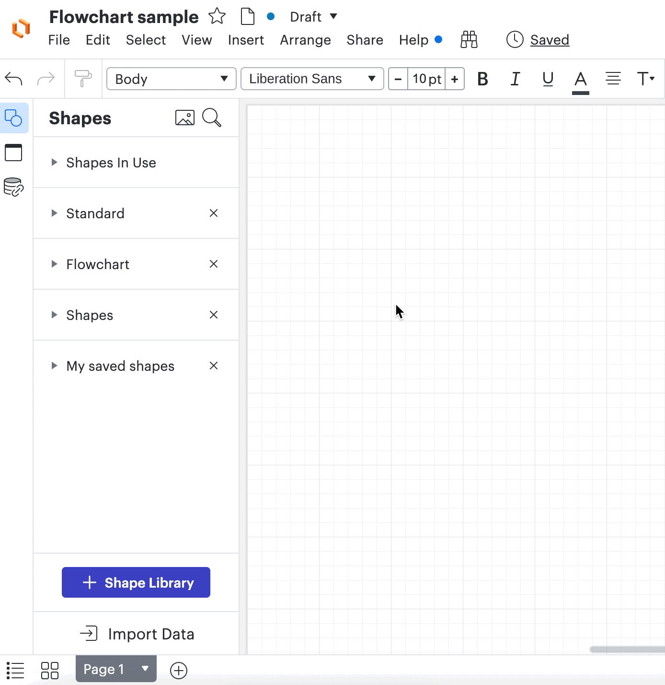
Note
If you can't find the desired shape in the list, you can choose another predefined library or create a custom one.
- Drag the desired shape from the list and drop it onto the canvas.
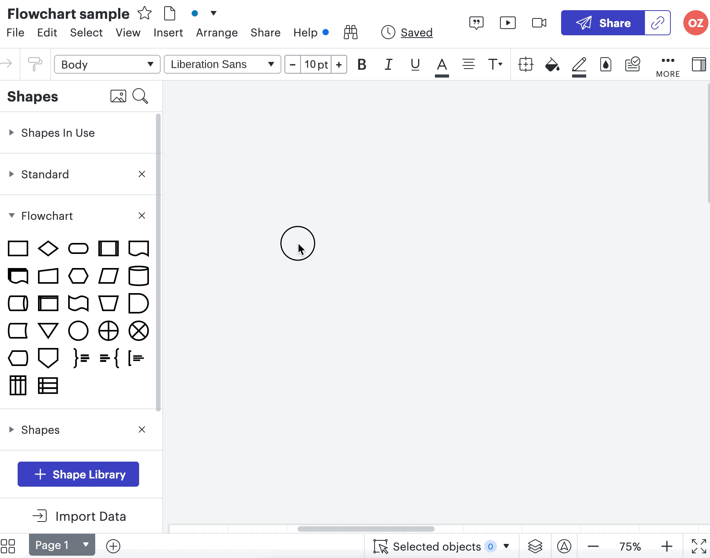
Success
The shape will appear on the canvas and is ready for further action.
Add a shape library
- Click on the [+ Shape Library] button in the bottom-left corner of the window or press the 'M' key. You will see the 'Insert content' window.
- Make sure the [Shape] tab is displayed in bold blue, which means it is selected.
- Type the name of the Shape Library you need in the [Search field] in the upper-left corner. For example, 'flowchart'.
- Check the [checkbox] next to the sets you want to work with.
- Click the [Use selected shapes] button in the bottom-right corner. 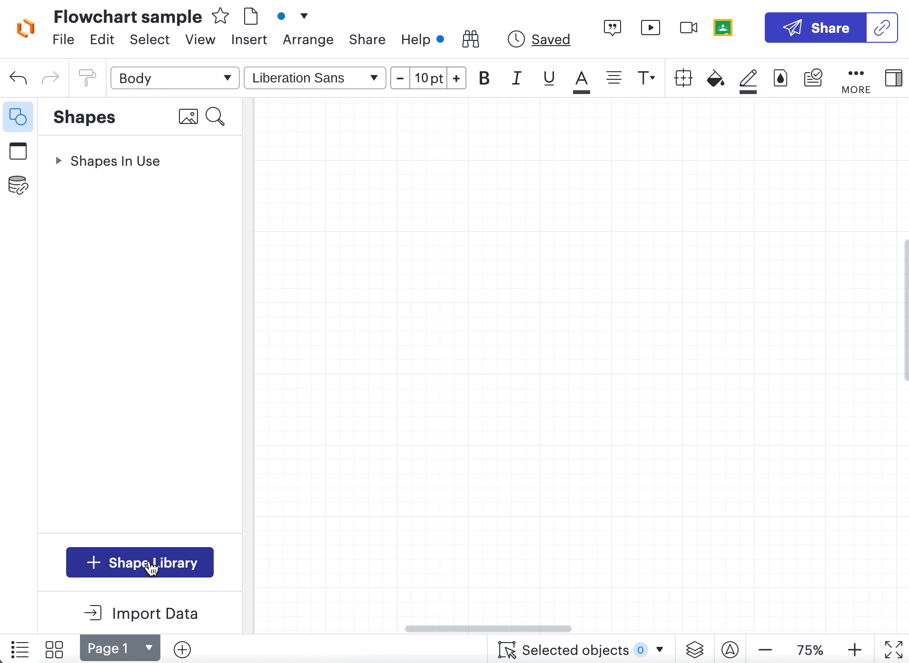
Success
After you close the 'Insert content' window, you can see the selected shape library displayed on the Shapes panel.
Delete shape
-
Click on the shape you want to delete. You will see a blue frame around the shape with squares on it.
-
Press the 'Delete' or 'Backspace' key to delete or right-click the mouse on the shape and select [Delete].
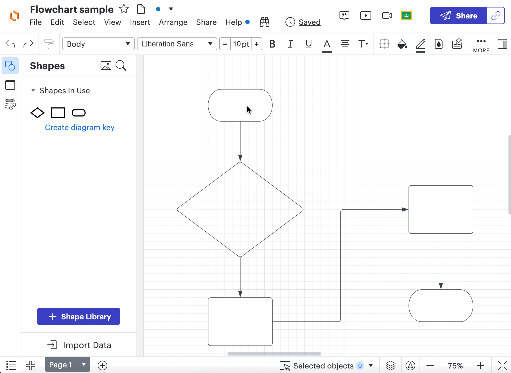
Success
The shape has been deleted.
Style shape
You can change the fill color of a shape, border thickness, style, or color.
Fill color
-
Click on the shape you want to modify.
-
Click the [paint bucket icon] on the formatting toolbar. 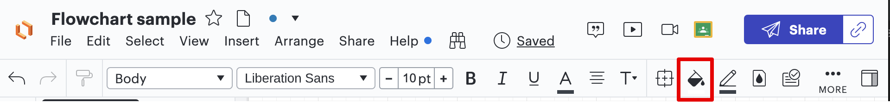
-
Select the desired color from the menu. Colors are listed in different opacities and filling styles. 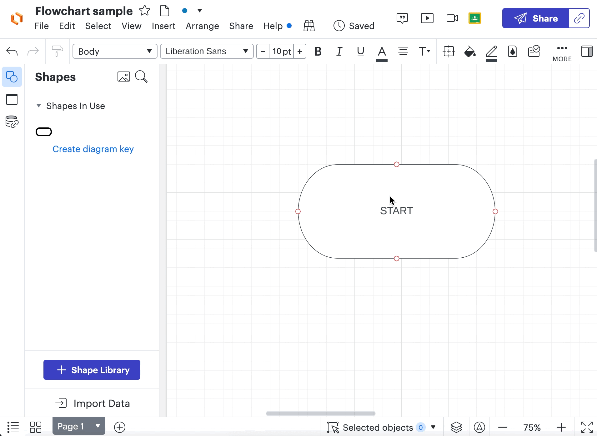
Border style
Change line color
- Click on the shape you want to modify.
- Click the [pen icon] on the formatting toolbar. 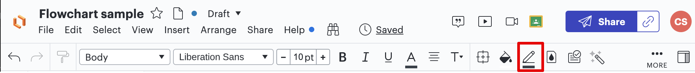
- Select a border color from the menu.
Change line thickness and border type
- Click on the shape you want to modify.
- Navigate to the [Line Style] pickers on the formatting toolbar. 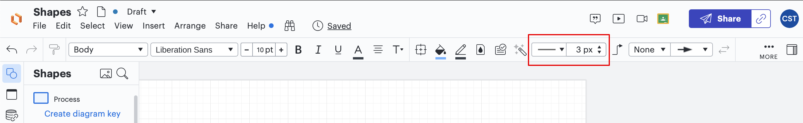
- Select border type from the options in the dropdown, or set border thickness in the picker. 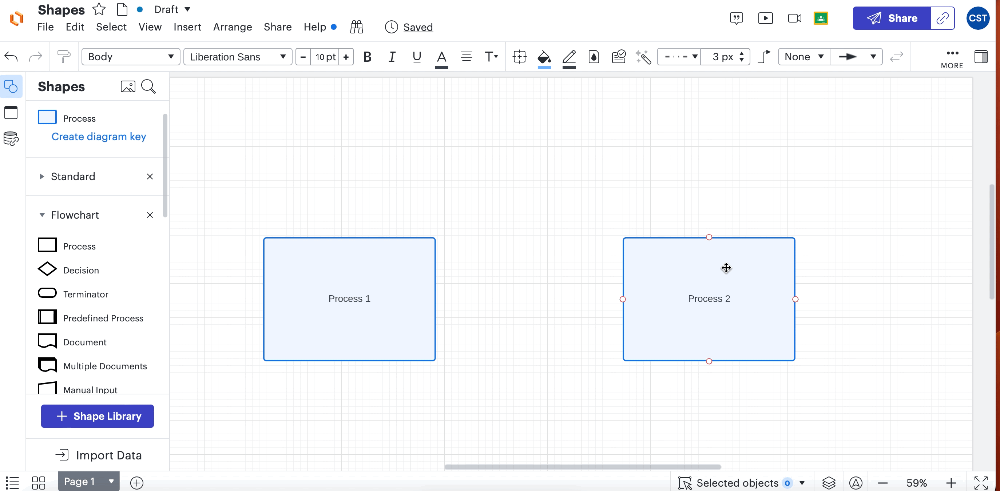
Set default style
To change the default style for all shapes in your project:
- Click anywhere on the canvas to unselect any selected shape.
- Set style settings, such as fill color, line style, etc.
Success
From now on, any new shape you add will be styled according to the set style.
Copy style
To apply the same style to all shapes on your canvas:
- Click on the shape that you want to copy the style from.
- Click on the [paint roller brush icon] to copy the style in the formatting toolbar. 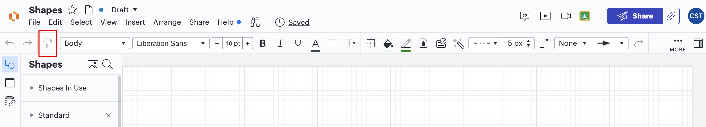
- Click on the shape you want to apply the style to. 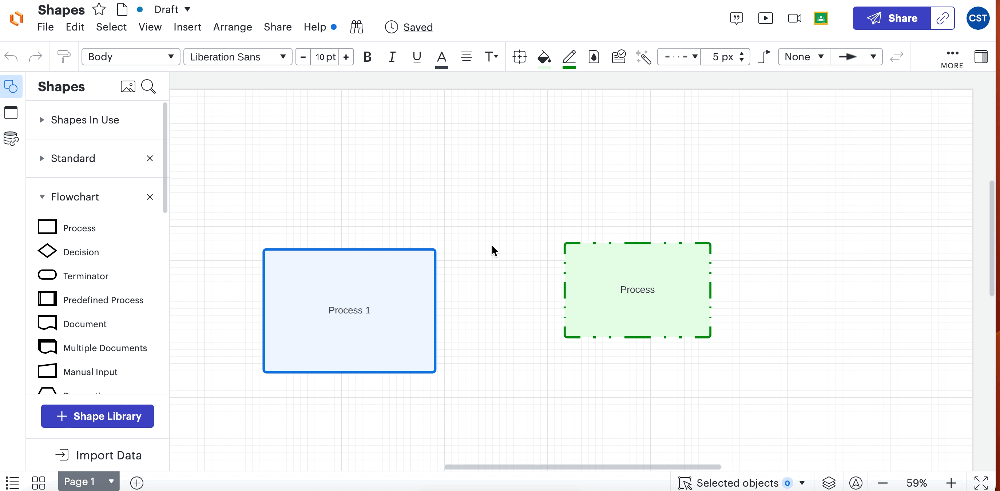
Success
The copied style is applied to the shape that was clicked last.
Manage shapes layout
Lucidchart provides great flexibility in managing the layout of the diagram.
Align
To align shapes:
-
Select shapes you want to align by holding [Ctrl] while clicking on the shapes or by dragging a box around shapes by pressing the left mouse button.
A blue rectangle should be displayed around all selected shapes. Additionally, each shape should be displayed with a blue border.
-
Right-click the mouse on [selection]
-
Choose the [Align] option from the options menu
-
Select the alignment option from the list 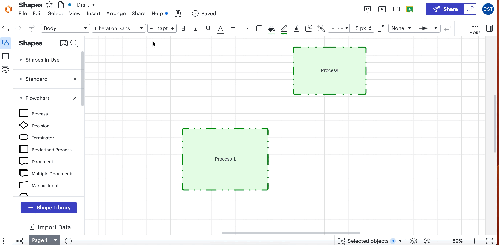
Group
To combine several shapes into one object:
- Select shapes you want to group by holding [Ctrl] while clicking on the shapes or by dragging a box around shapes by pressing the left mouse button.
- Right-click the mouse on the selection
- Select the Group option in the menu 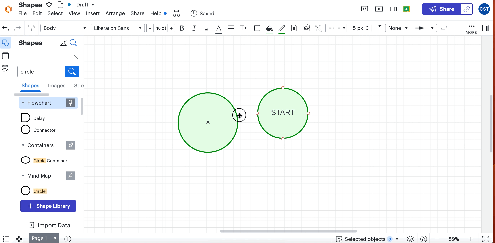
Lock
To lock a position, size, or style of a shape:
- Click the shapes you want to lock.
- Click the [lock icon] on the formatting toolbar.
- In the window, check the boxes for all characteristics of a shape you want to lock.
- Close the window to save changes 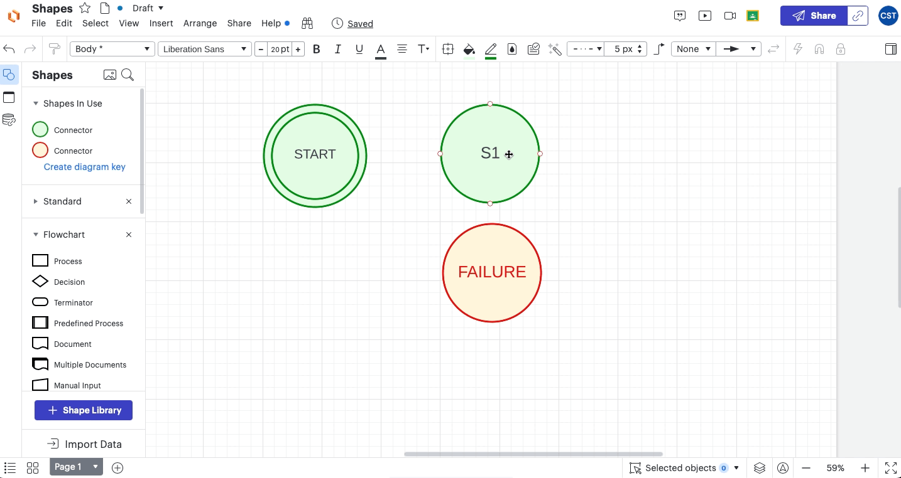
Note
To be able to modify a locked position, size, or style of a shape again, follow the same steps and click [Unlock].
Warning
If the shape you locked is inside a parent object, such as a container or a group, the shape will follow the container/group even if its position is locked.